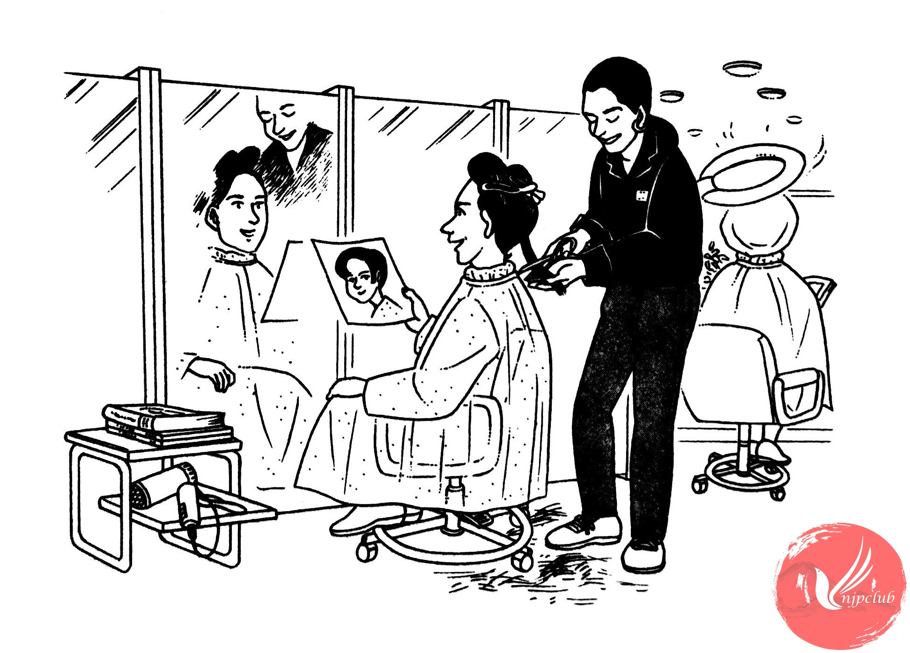

| 美容師： |
いらっしゃいませ。きょうは どう なさいますか。 |
| イー： |
カット、お願いします。 |
| 美容師： |
じゃ、シャンプーを しますから、こちらへ どうぞ。 |
| ‐‐‐‐‐‐‐‐‐‐‐‐‐‐‐‐ | |
| 美容師： |
カットは どういうふうに なさいますか。 |
| イー： |
ショートに したいんですけど、･････。 |
|
この 写真みたいに して ください。 |
|
| 美容師： |
あ、すてきですね 。 |
| ‐‐‐‐‐‐‐‐‐‐‐‐‐‐‐‐ | |
| 美容師： |
前の 長さは これで よろしいでしょうか。 |
| イー： |
そうですね。もう 少し 短く して ください。 |
| ‐‐‐‐‐‐‐‐‐‐‐‐‐‐‐‐ | |
| 美容師： |
どうも お疲れさまでした。 |
| イー： |
ありがとう。 |